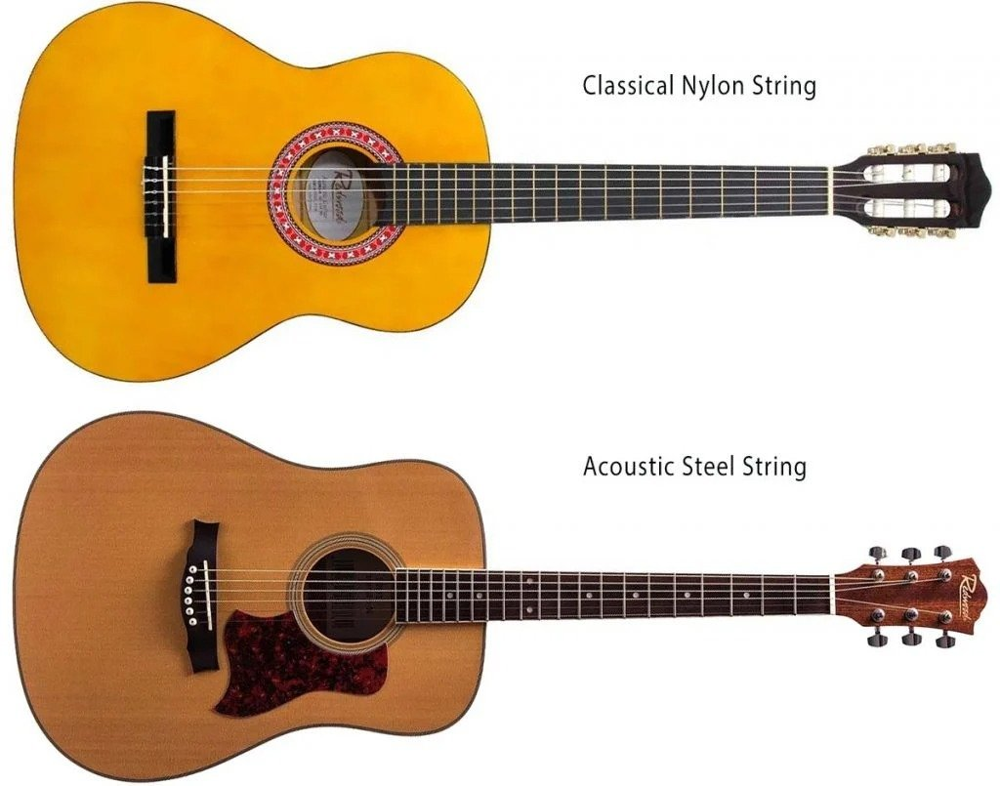
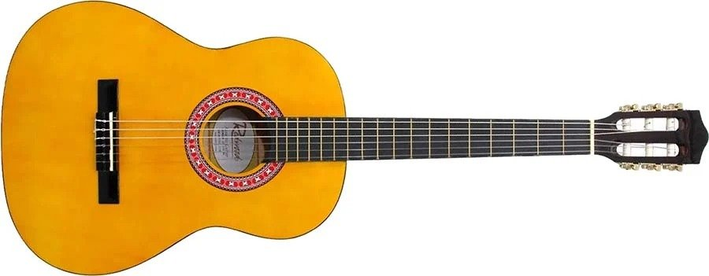
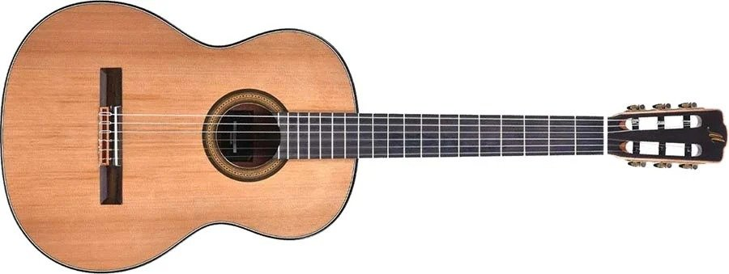
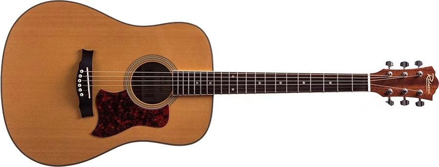
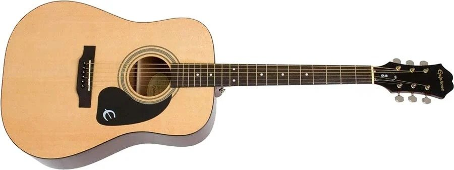

What Is The Difference Between Classical And Acoustic Guitars ?
So, you’ve decided to start playing the guitar!
First of all, congratulations, you’re about to embark
on a rewarding musical journey that will
undoubtedly change your life for the better
Yes, guitar is that good!
The journey begins by deciding what type of
guitar you want to start with though, a tough decision!
Of course, you can start with any type of guitar,
whether electric, acoustic, classical, or bass,
and once you’ve learned the basics you can
swap between all of them at your own pace.
Today we’re going to focus on the most
common starting points for guitarists;
acoustic and classical guitars.
Why Classical Vs. Acoustic ?

If you want to know why most guitarists
start on an acoustic or classical guitar,
it’s usually because an acoustic is a little
less harsh on the fingers and a very simple pick-up-and-play option. You don’t need an amplifier to hear the sound properly and
they are often available at a lower
price than electric guitars.
Key Differences Between
Classical and Acoustic Guitars
1.Fretboard
The fretboard of a classical guitar is a
lot wider than that of an acoustic. Quite
often classical guitars will not have the
fret markers (dots or inlays) along the fingerboard either.
2. Body Shape
The shape is very different too. Acoustic guitars predominantly come in a
dreadnought shape which is considerably larger than that of a classical guitar and cutaways where you have access to the
higher frets on classical guitars
are rather rare.
3. Price
Often classical guitars are a little cheaper
than their acoustic cousins, which is why many beginners start with a classical
guitar first.
4. Strings
First of all, let’s clear up one thing –
both these guitars are in fact acoustic
guitars, except one uses nylon strings (classical) and the other uses steel string (acoustic). Confusing, yes but the
differences between the two are vast!
A classical guitar uses nylon strings
whereas the modern acoustic uses steel string, hence it’s often referred to as a
“steel string acoustic”. These strings
both sound and feel very different indeed.
The nylon strings of a classical guitar are
a lot thicker and mellower or softer
sounding than those of a steel string
With steel-string acoustic guitar strings
you get a very twangy and bright sound
that resonates (lasts longer) than a
classical guitar. They also feel very
different too. Nylon strings are thicker
and because the treble strings (G,B, high E) are nylon and the bass strings are nylon
cores with metal or use a nylon winding technique on the E, A, D strings, it can be
a lot more comfortable to play when
you’re a beginner.
Steel-string acoustic guitars use a variety
of metals for strings, including nickel and bronze and they are closer to the likes of electric guitar strings i.e. thinner and somewhat sharper on fingers. Don’t worry though, with enough practice your fingers won’t hurt as much
5. Timbre (Sound)
The difference in strings and shape
plays a huge part in how the two guitars
sound which will also be a deciding factor when it comes to choosing one
over the other. Think about what type
of music you prefer to listen to.
If you like Gypsy Kings style music,
Flamenco or Spanish guitar, the classical guitar is right for you and often the main,
if not only, type of guitar those types of musician’s use. Pretty much every favourite band of yours will be using a steel-string acoustic rather than a classical guitar.
Yes, you can learn on either one, but “Wonderwall” by Oasis or “Yesterday”
by The Beatles will sound very weird
indeed when played with a classical guitar. Most guitarists will make the natural progression from classical to acoustic,
but very few choose to stay loyal to a
classical guitar.
So, which one is the right guitar for me?
Classical Nylon String Guitars :
If you like the sounds of Flamenco or Spanish
guitar, want a cheaper alternative to learn the
basics with or a lighter option that is slightly
easier to carry, the classical guitar might be
for you. Here are some affordable nylon string classical guitar options in price ascending order, ranging from quality beginner guitars to a more intermediate option for those who
want to continue their journey with the classical guitar.

If you don’t want to spend a great deal on a beginner guitar, the Redwood CG-212 Half
Size Classical Guitar is perfect for you. The mixture of solid hardwood body and nylon strings creates hearty energy paired with comfortable playability. The short-scale is
ideal for new players who are honing their technique before moving onto a
three-quarter or full-scale model.

The Merida Trajan T-5 classical guitar is a really good option for those who want an instrument that will last a lifetime without breaking the bank. A quality, hard-wearing instrument that sounds as good as it looks
Steel String Acoustic Guitars
As for steel-string acoustic guitars ,
we’ve rounded up a couple of options,
again ranging from beginner to those who want to get a bit more serious. If you like
loud, rich tones and an extremely
versatile option that you can use for a
wide range of music genres, then you'll probably want to start with a steel string

Our first option comes from another trusted name in acoustic guitars comes in the
form of Redwood. The brand has been
making guitars for musicians of all levels
for decades and you can’t really go wrong
with the Redwood D50. A great quality instrument that you won’t have to upgrade (unless you really want to) due to the
strong focus on playability and expert craftsmanship.

Epiphone's well-stocked acoustic range
does not disappoint. For those who have decided that the acoustic guitar is for them, you can’t go wrong with the
Epiphone DR-100. The solid dreadnought
body produces the warmest of tones,
whilst the stable neck offers a fantastic
playing support to lay your chops down on.
Final Thought
The best thing you can do is try as many guitars as you can and see which style
is best for you and the music you like
to play. There are thousands of guitars out there, but only a handful are right
for you - take your time and have fun!
Quick recap of the guitars highlighted in the article:
Redwood CG-212 Half-Size Classical Guitar
Merida Trajan T-5 Classical Guitar
Redwood D-50 Acoustic Guitar
Epiphone DR-100 Acoustic Guitar
Find Me On :
Instagram : @paulgherman29
Facebook : Paul Gherman
Ⓒ gherman.com. All Rights Reserved.
Dont Forget That
Guitar Is Very Fun !